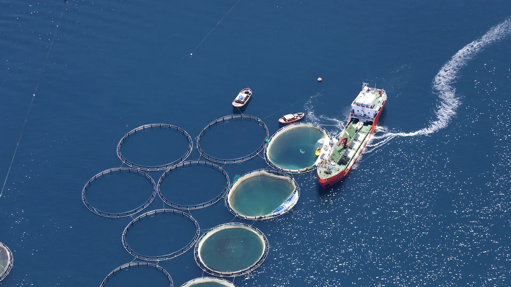
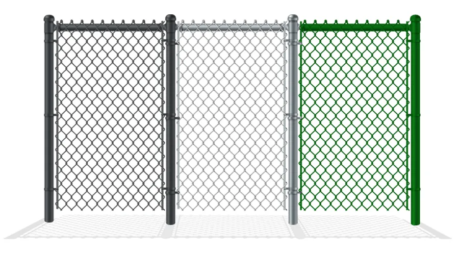
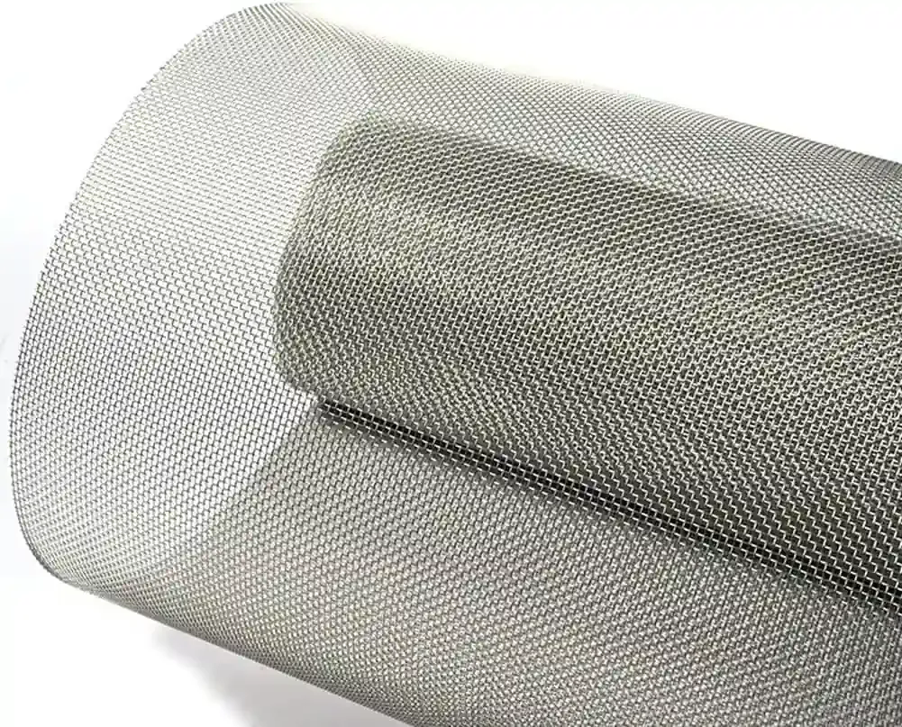
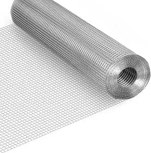

Metal Finishing
Professional surface treatment and coating services to enhance durability, appearance, and corrosion resistance of your metal products. The right finish extends service life by decades.
Surface Treatment That
Lasts Decades
The right finish can extend the service life of wire mesh and fencing products by decades. Kestrel Metal offers a full spectrum of metal finishing services engineered for performance in any environment.
From hot-dip galvanizing to electrostatic powder coating, every coating line combines automated pre-treatment with controlled application to deliver uniform coverage, strong adhesion, and verified corrosion protection.

Finishing Options for Every Application

Hot-Dip Galvanizing
We provide full hot-dip galvanizing services that coat steel components in a layer of zinc, offering superior corrosion protection for outdoor fencing and mesh products. Typical coating thickness ranges from 45 to 85 microns depending on material thickness, delivering 20+ years of rust-free performance in most environments.

Powder Coating
Our electrostatic powder coating line applies a uniform, chip-resistant polymer finish in any RAL color. Powder coating is ideal for architectural mesh panels, decorative fencing, and any application where both aesthetics and weather resistance are priorities. We offer matte, satin, and gloss finish options.

PVC & PE Plastic Coating
For chain link fencing and woven wire mesh, we apply PVC or polyethylene coatings through a heated extrusion process. This creates a tough, weather-resistant plastic shell around each wire, available in standard colors like green, black, and brown, as well as custom color matches upon request.

Stainless Steel Passivation & Polishing
Stainless steel mesh and components receive passivation treatment to remove surface contaminants and restore the chromium oxide layer for maximum corrosion resistance. We also offer mechanical polishing and electropolishing for a mirror-bright or brushed finish on architectural and food-grade applications.
How We Finish Your Products
Surface Preparation
All metal surfaces are degreased, cleaned, and abrasive-blasted to remove mill scale, rust, and contaminants, ensuring optimal coating adhesion.
Pre-Treatment & Priming
Components receive chemical pre-treatment — such as phosphating or chromating — and a primer coat where required to maximize corrosion protection and coating bond strength.
Coating Application
The selected finish is applied using the appropriate method — dipping, spraying, or electrostatic application — with controlled thickness and uniform coverage across every surface.
Curing & Inspection
Coated parts pass through curing ovens or cooling stages, then undergo thickness testing, adhesion checks, and visual inspection before being approved for shipment.
Finishing Excellence You Can Trust

In-house powder coating line with automated pre-treatment ensures fast turnaround and consistent color matching across batches.
Certified galvanizing partners guarantee hot-dip galvanizing that meets ASTM A123 and ISO 1461 requirements.
Full RAL color palette available with custom color matching services for projects requiring specific brand or architectural colors.
Salt spray testing and coating thickness measurement reports available upon request for quality documentation.
Combined finishing packages — galvanizing plus powder coating — provide the ultimate in corrosion protection and visual appeal.
Environmentally compliant processes with proper waste treatment and VOC management at all finishing facilities.
Need the Right Finish for Your Project?
Contact our finishing specialists to discuss coating options, color matching, and corrosion protection specifications for your products.